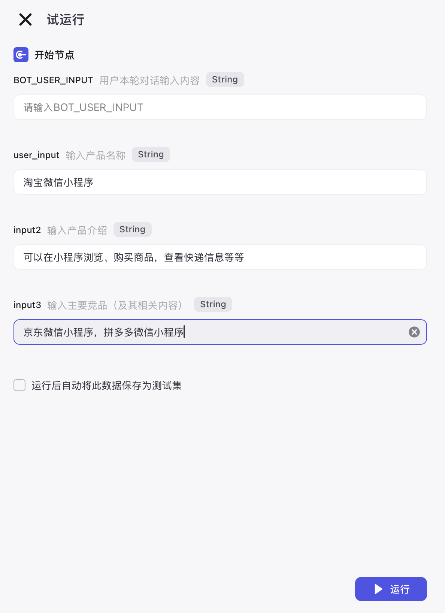
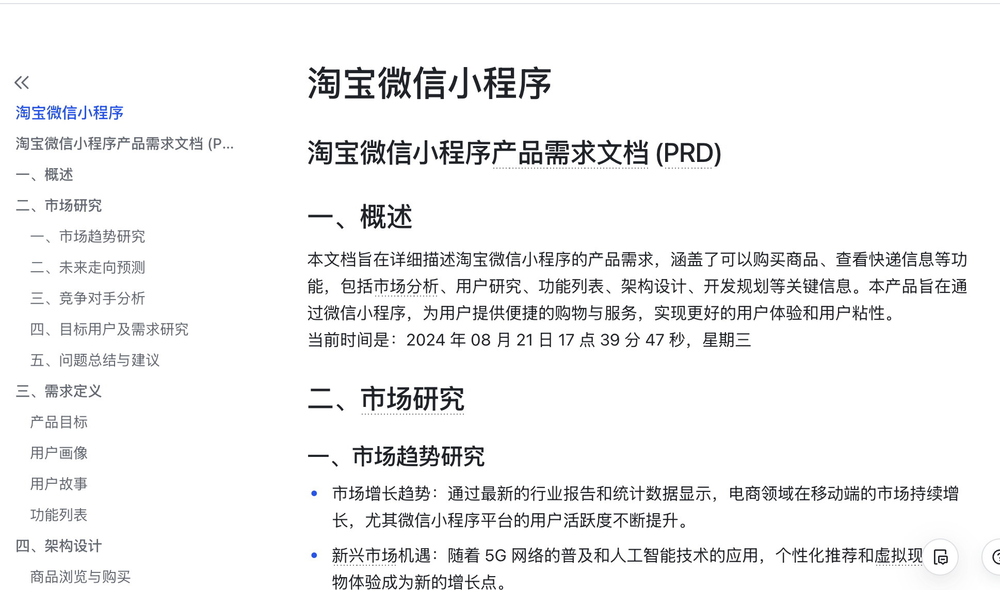
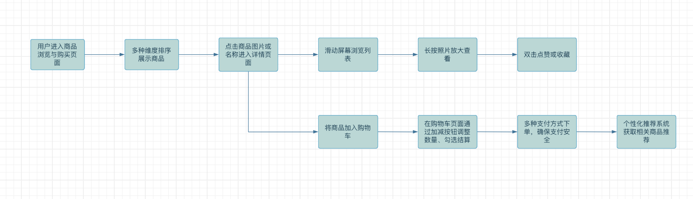
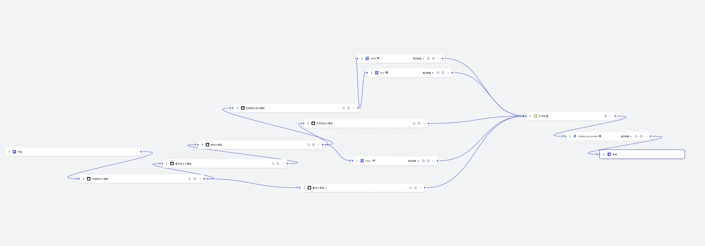
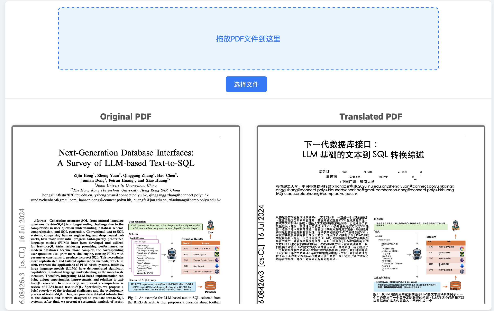
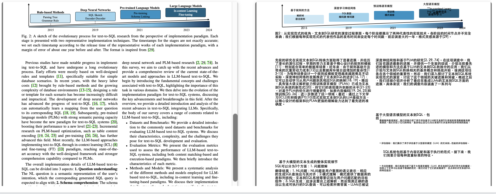
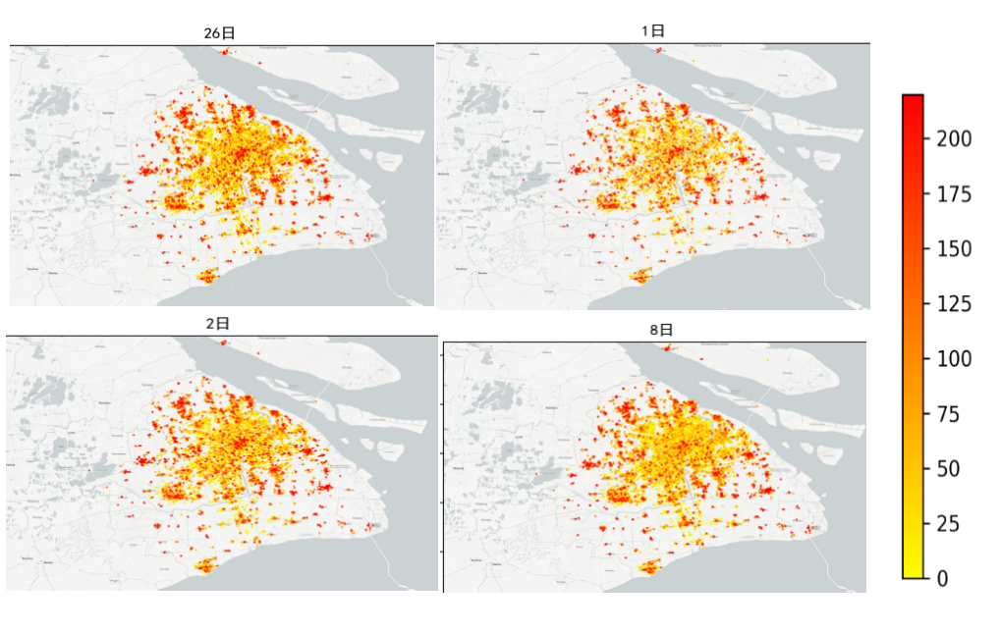

关于我

个人能力关键词：
个人陈述：
个人作品
产品需求文档（PRD）撰写小工具--工作流/agent
这是一个基于 Coze 平台打造的智能工作流系统，能够根据您提供的产品内容自动生成完整的 PRD 文档。工作流涵盖市场研究、需求定义、架构设计、开发规划四个关键部分，并支持自动生成 ProcessOn 流程图。此外，系统还会将所有内容汇总成完整的报告，并生成可分享的飞书云文档链接，方便团队协作与文档管理。
工作流测试链接： 点击查看
产品介绍： 点击查看
输出成果展示： 点击查看

试运行输入界面


部分流程图展示

工作流展示（已折叠）
PDF翻译工具
借助ChatGPT及相关技术，我自主开发了一款功能全面的PDF翻译小工具。开发过程涉及前端界面的精心设计、后端架构的优化搭建、prompt的精准编写以及整体实现逻辑的严密规划。工具在实现过程中调用了`Spark API`，进一步提升了数据处理和翻译的效率，确保了用户体验的流畅性。
这款工具充分借助大模型的卓越能力，使翻译变得更加精准可靠，能够自动识别并翻译上传的PDF文档。翻译后的内容将与原始PDF在页面上同步显示，支持用户进行双语对照查看。通过这种方式，用户可以在不离开当前页面的情况下，轻松切换阅读原文和译文，极大地提高了阅读的流畅性和工作效率。
GitHub代码链接： 点击查看
产品介绍及成果展示链接： 点击查看

前端界面
翻译结果
个人经历
教育经历
北京工业大学 | 211 | 硕士 | 智能交通 | 2022-2025
主修课程：数值分析，机器学习，地面信息数据建模，人工智能，交通大数据等
天津工业大学 | 双一流 | 本科 | 信息管理与信息系统 | 2018-2022
主修课程：数据库原理，数据挖掘，管理信息系统，时间序列分析，商务智能等
实习经历
百度 | 文心一言 | 大模型角色构建师 | 2023.11-2024.1
1.角色模型prompt构建：研究和探索 Prompt 提示词工程的在角色模型创新应用，运用先进的prompt技术和NLP技术，设计出更具引导性和启发性的提示词，通过打磨提示词的语言表达和逻辑结构，激发用户的输入欲望，使AI 系统能够更精准地理解用户的深层意图，进而生成更贴合用户需求、更具个性化和情感色彩的回复。
2.数据管理：精细化构建语料库与知识图谱，策划并执行多样化、高质量文本与知识资源的筛选和引入流程，通过对数据挖掘和精准分类，为模型提供丰富且精准的知识储备，提升模型的认知能力和生成精度，为模型的优化和迭代升级筑牢坚实根基。定期对语料库和知识图谱进行评估与更新，紧跟行业动态和知识演进，及时补充最新、最有价值的信息，保障模型始终拥有前沿且知识体系，适应变化的用户需求和应用场景。
3.开发优化：参与大模型角色扮演功能的开发与性能调优工作，通过分析用户行为数据和反馈，把握用户需求的细微差异和变化趋势，运用先进的算法和技术，优化模型在情境理解和个性化回复方面的能力，使 AI 系统能够在复杂多变的语境中迅速捕捉关键信息，提供准确的回复。
4.工作业绩：成功构建语料库与知识图谱，通过数据挖掘与分类，为模型提供精准的知识支撑，紧跟行业前沿，更新资源，保障模型性能与时俱进，在开发优化方面，负责大模型角色扮演功能的迭代，运用先进算法优化情境理解与个性化回复，应用Prompt 工程，提升 AI 系统的交互质量和用户体验，跨部门协作上，整合团队资源，保障项目目标一致，及时应对挑战，促进知识共享与协同创新，推动项目落地。
感易智能 | 民生银行大模型项目部 | AI算法开发工程师 | 2024.6-至今
1. 撰写prompt综述 ，详尽阐述了与目前Prompt相关的多种技巧及其实际应用案例，内容由浅入深，用最简洁的语言，从基础概念出发，逐步深入到提升模型推理能力、增强运行稳定性及保障安全性的高级技巧。共分为相关概念；目的；通用问题常用模板；特定问题prompt案例；prompt基础用法；prompt进阶用法；特殊用法；其他工具共八个部分。
2.参与企业微信AI助手的开发：全面参与了企业微信AI助手的开发工作，涵盖了从前期立项准备到项目交付的全流程。前期负责需求分析和立项准备，结合业务需求与技术可行性制定了详细的项目规划。在模型构建阶段，参与了模型架构的设计与实现，重点优化了Prompt的应用，以提高模型对多样化用户输入的理解能力。在此过程中，通过调研与测试，改进了多种Prompt模板和策略，以确保系统在实际应用中的高准确率和稳定性。此外，还主导设计并实施了自动化测试系统，为项目的持续集成和迭代提供了技术保障，显著提高了开发效率和交付质量。
3.项目迭代升级：在项目的多个迭代周期中，承担了算法优化与系统升级的关键任务。通过对模型性能的持续监控与分析，发现并解决了多项潜在的性能瓶颈，并在此基础上进一步优化了算法，使得模型在处理复杂场景和高并发情况下依然保持高效稳定的表现。同时，积极推进技术栈的更新与工具链的优化，参与构建了更加灵活的模型更新机制，确保了项目能够快速适应业务需求的变化和技术发展的趋势。此外，在每次迭代过程中，定期与跨部门团队沟通协作，推动了产品功能的不断完善和用户体验的持续提升。
在校项目经历
1. 实用新型专利：涡流电池充电器 CN201720868372.5（高中期间）
在高中时期，独立设计并成功申请了实用新型专利，该发明利用涡流感应技术，为市场带来了一种全新的、广泛兼容的无线充电解决方案，该发明可以为电池及电子设备其提供一种可充电的电池收纳仓。 点击查看
2. 基于用户订单数据的共享单车需求影响因素分析
项目背景：由于共享单车的需求未能得到精准满足，为了优化共享单车的分布及调度情况，避免资源浪费，参与了基于大数据的共享单车需求预测项目。
清洗处理：利用 Python 编程语言 Pandas 库等，对超过 2000 万条的用户订单数据进行清洗，去除异常值、填补缺失值，生成共享单车需求链路，保障数据的准确性和完整性，为后续分析奠定坚实基础。
需求分析：在本研究中，具有特定地理坐标及相关属性信息的地点或场所是影响需求的关键因素之一。为了分析这些影响，我们获取了当地地图的POI数据，并将其按类别进行划分，例如餐厅、酒店、加油站、商场、银行和景点等。这些分类变量将作为需求分析的重要参考。
聚类算法：结合城市地图poi数据，采用 DBSCAN 算法进行空间聚类分析，识别共享单车的高需求热点区域需求量及区域内部的特定的地点或场所的数量。为精准投放提供依据，保障在需求密集区有足够的车辆供应。
模型构建：运用高级数据分析技术，包括地理加权回归模型（GWR），探究影响共享单车需求的多元因素，如天气条件、时间周期（如早晚高峰）、节假日、特殊事件等，为预测模型的构建提供理论支撑。
资源配置：结合预测模型的输出，优化共享单车的投放和调度策略，保障资源的利用，减少闲置率，提升用户使用体验，降低运营成本。
项目业绩：通过清洗与分析超过 2000 万条用户订单数据，识别共享单车需求热点与影响因素，成功构建预测模型，提升资源调配的精准度与效率，优化共享单车的运营，降低运营成本，提升用户体验。

共享单车需求预测
3. 金隅混凝土智能配比大模型研究课题
项目背景：水泥混凝土的质量与配比密切相关，而传统的配比方法往往依赖于经验和试错，效率低下且难以达到最优性能，负责的项目旨在研发一套基于人工智能的混凝土配比优化系统。
选型设计：研究并选择深度学习与智能优化算法作为关键技术路径，设计整个智能配比系统的架构，保障其能够适应复杂多变的混凝土性能需求。
数据收集：使用Spark数据库获取大量历史数据，涵盖混凝土配比的多个关键参数，如水泥类型、砂石比例、添加剂种类及其含量、水灰比等。为了确保模型训练的精度，使用python的pandas库等进行了全面的数据清洗与预处理，消除噪声和异常值，填补缺失数据。同时，采用数据增强技术扩充样本量，确保模型能够适应不同环境和工况下的混凝土性能预测需求。
开发训练：基于深度学习框架TensorFlow 开发能够预测混凝土性能的神经网络模型，通过智能优化算法，如遗传算法、粒子群优化等，调整模型参数，以找到最佳的混凝土配比方案。
评估迭代：设计性能评估体系，包括强度、耐久性、流动性等关键指标，通过实验验证模型预测的准确性，并根据反馈优化模型，保障其在实际应用中的可靠性和稳定性。
集成应用：将智能配比模型集成到现有的生产流程中，设计用户友好的交互界面，使操作人员能够根据不同的工程需求快速获得最优配比建议，提升生产效率和混凝土质量的一致性。
项目成果：该智能配比系统提高混凝土的质量一致性，降低原材料浪费，提升生产效率，项目成果得到业界的广泛认可，为建筑材料行业的智能化转型树立典范。
其他经历
1. 新加坡南洋理工大学研学项目：人工智能交叉学科
项目描述：在新加坡南洋理工大学的人工智能交叉学科研学项目中，研究学习最前沿的 AI 理论与技术，成功在交通领域的创新应用，通过对文献的批判性分析，提炼出 AI 如何重塑交通行业的关键洞见，展示将跨学科知识融会贯通、解决实际问题的能力。
2. 天津工业大学骑行社：社长、宣传部长
作为天津工业大学骑行社的社长，规划并领导多次长途骑行活动，包括海南、云南、青海等目的地，充分发挥了一系列关键的组织技能，包括规划能力、团队沟通、团队协作、安全保障、物资筹备、预算控制、风险应对等多个方面。
作为宣传部长，策划并执行社团的十周年庆典及其他特色活动，负责的宣传片制作与自媒体运营，提升社团的品牌影响力和会员参与度。
3. 海峡两岸单车天使公益骑行活动：第十届影音组志愿者
负责视频拍摄、无人机航拍以及后期宣传视频制作，负责自媒体平台运营与文案撰写，协助处理活动相关的行政工作，包括预算管理、资源协调和后勤支持等。